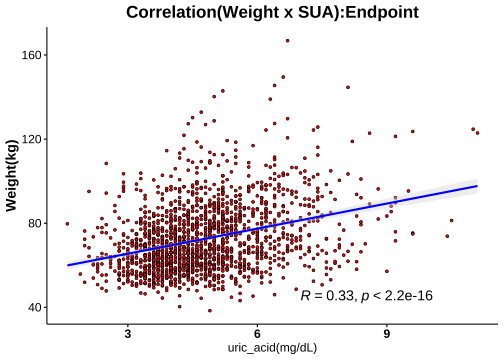
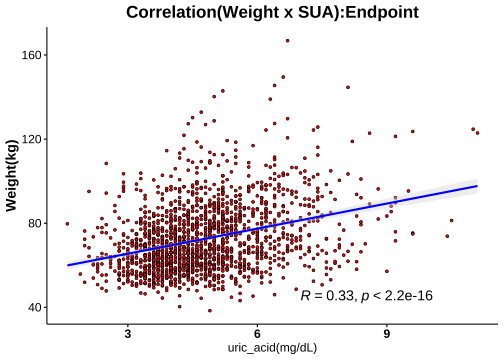

1.8 分層分析-3: 尿酸(Serum Uric Acid)
1.8.1 相關分析(Correlation Analysis)
 



1.8.2 Cutoff-1 (♂7.6/♀6.6)
| No change | Decrease | Increase | Normal>High | High>Normal | High>High | Sum | |
|---|---|---|---|---|---|---|---|
| female | 154 | 873 | 193 | 41 | 145 | 44 | 1450 |
| male | 36 | 157 | 28 | 11 | 90 | 25 | 347 |
| Sum | 190 | 1030 | 221 | 52 | 235 | 69 | 1797 |
|
Cutoffs: Male: 7.6 (mg/dL) Female: 6.6(mg/dL) |


成效(Effectiveness)


成效(%)-Blood

| No change | Decrease | Increase | Normal>High | High>Normal | High>High | No change | Decrease | Increase | Normal>High | High>Normal | High>High | |
|---|---|---|---|---|---|---|---|---|---|---|---|---|
| 體重(T0) | 70.87 ± 1.11 | 71.98 ± 0.44 | 70.5 ± 0.95 | 74.24 ± 2.23 | 82.25 ± 1.15 | 86.55 ± 2.98 | 95.09 ± 3.59 | 92.64 ± 1.17 | 88.73 ± 2.83 | 93.78 ± 6.41 | 98.18 ± 1.74 | 101.91 ± 4.06 |
| BMI(T0) | 27.79 ± 0.4 | 27.87 ± 0.16 | 27.28 ± 0.34 | 28.56 ± 0.66 | 31.65 ± 0.42 | 33.38 ± 1 | 31.82 ± 1.21 | 30.67 ± 0.34 | 29.07 ± 0.79 | 30.71 ± 1.84 | 32.63 ± 0.49 | 33.52 ± 1.25 |
| 體脂重(T0) | 28.69 ± 0.75 | 28.74 ± 0.31 | 27.75 ± 0.65 | 31.56 ± 1.44 | 36 ± 0.83 | 39.5 ± 2.02 | 33.23 ± 2.56 | 30.49 ± 0.73 | 28.48 ± 1.98 | 31.79 ± 4.01 | 35.32 ± 1.26 | 37.04 ± 3.03 |
| 體脂率(T0) | 39.72 ± 0.49 | 39.16 ± 0.21 | 38.57 ± 0.46 | 41.83 ± 0.77 | 43.15 ± 0.46 | 44.67 ± 0.9 | 33.57 ± 1.24 | 32.33 ± 0.45 | 31.33 ± 1.31 | 32.93 ± 1.85 | 35.14 ± 0.68 | 35.18 ± 1.57 |
| 骨骼肌質量指數(T0) | 6.7 ± 0.06 | 6.84 ± 0.03 | 6.74 ± 0.06 | 6.79 ± 0.11 | 7.36 ± 0.07 | 7.49 ± 0.15 | 8.78 ± 0.16 | 8.76 ± 0.06 | 8.49 ± 0.15 | 8.69 ± 0.31 | 8.86 ± 0.07 | 9.02 ± 0.16 |
| 骨骼肌率(T0) | 32.73 ± 0.26 | 33.13 ± 0.11 | 33.32 ± 0.24 | 31.63 ± 0.4 | 31.2 ± 0.25 | 30.39 ± 0.48 | 37.4 ± 0.68 | 38.22 ± 0.26 | 38.59 ± 0.76 | 37.6 ± 0.99 | 36.69 ± 0.39 | 36.73 ± 0.88 |
| 內臟脂肪面積(T0) | 139.48 ± 3.83 | 141.56 ± 1.52 | 138.34 ± 3.35 | 156.93 ± 6.89 | 175.88 ± 3.42 | 190.69 ± 7.3 | 134.68 ± 8.26 | 133.7 ± 3.69 | 125.35 ± 9.53 | 119.6 ± 10.89 | 153.65 ± 5.65 | 145.21 ± 11.28 |
| 腰圍(T0) | 91.84 ± 0.91 | 92.14 ± 0.38 | 90.54 ± 0.82 | 95.24 ± 1.99 | 101.31 ± 0.89 | 104.55 ± 2.1 | 106.05 ± 2.84 | 104.28 ± 0.95 | 99.96 ± 2.43 | 104.36 ± 4.99 | 110.62 ± 1.55 | 111.99 ± 3.34 |
| 除脂體重(T0) | 42.18 ± 0.47 | 43.24 ± 0.18 | 42.75 ± 0.41 | 42.68 ± 0.92 | 46.24 ± 0.47 | 47.05 ± 1.12 | 61.85 ± 1.25 | 62.15 ± 0.6 | 60.25 ± 1.36 | 61.99 ± 2.94 | 62.86 ± 0.7 | 64.86 ± 1.58 |
| 基礎代謝率(T0) | 1281.28 ± 10.13 | 1304.07 ± 3.88 | 1293.28 ± 8.85 | 1292.12 ± 19.9 | 1368.89 ± 10.08 | 1386.27 ± 24.22 | 1706.14 ± 26.95 | 1712.61 ± 12.95 | 1671.21 ± 29.26 | 1709.27 ± 63.38 | 1727.74 ± 15.11 | 1771.12 ± 34.19 |
| 糖化血色素(T0) | 5.51 ± 0.04 | 5.49 ± 0.01 | 5.52 ± 0.06 | 5.48 ± 0.07 | 5.75 ± 0.05 | 5.95 ± 0.2 | 6.06 ± 0.19 | 5.58 ± 0.04 | 6.09 ± 0.2 | 6.07 ± 0.38 | 5.62 ± 0.04 | 5.9 ± 0.17 |
| 空腹血糖(T0) | 86.95 ± 1.96 | 85.68 ± 0.34 | 86.13 ± 1.38 | 86.34 ± 1.76 | 87.89 ± 1.15 | 93.43 ± 5.47 | 97.92 ± 6.28 | 89.13 ± 1.03 | 100.57 ± 6.41 | 101.82 ± 13.3 | 86.31 ± 0.96 | 92.2 ± 3.77 |
| 空腹胰島素(T0) | 11.47 ± 0.67 | 11.65 ± 0.28 | 10.32 ± 0.7 | 14.29 ± 1.66 | 17.59 ± 0.93 | 21.36 ± 3.03 | 16.55 ± 2 | 15.76 ± 0.82 | 18.99 ± 2.35 | 16.92 ± 3.76 | 18.7 ± 1.27 | 18.27 ± 2.14 |
| 胰島素阻抗值(T0) | 2.45 ± 0.16 | 2.58 ± 0.08 | 2.37 ± 0.28 | 3.1 ± 0.37 | 3.91 ± 0.23 | 4.95 ± 0.75 | 3.98 ± 0.49 | 3.48 ± 0.18 | 4.98 ± 0.83 | 4.5 ± 1.26 | 4.06 ± 0.31 | 4.26 ± 0.55 |
| β細胞功能(T0) | 200.65 ± 12.46 | 199.41 ± 8.6 | 171.34 ± 19.31 | 240.85 ± 29.14 | 309.43 ± 25.83 | 339.67 ± 42.06 | 225.49 ± 29.66 | 246.72 ± 16.69 | 238.97 ± 23.12 | 222.15 ± 42.08 | 334.49 ± 35.06 | 288.36 ± 34.74 |
| 三酸甘油脂(T0) | 102.76 ± 3.94 | 106.46 ± 1.87 | 93.99 ± 3.31 | 98.95 ± 6.96 | 146.97 ± 6.11 | 161.11 ± 22.89 | 131.69 ± 11.54 | 147.1 ± 7.14 | 153.36 ± 16 | 132.91 ± 21.8 | 174.5 ± 11.03 | 166 ± 19.11 |
| 總膽固醇(T0) | 198.42 ± 2.86 | 196.14 ± 1.23 | 198.42 ± 2.66 | 199.12 ± 6.91 | 205.08 ± 3.68 | 196.55 ± 5.12 | 181.81 ± 4.9 | 196.61 ± 2.88 | 183.43 ± 7.11 | 201.36 ± 9.27 | 203.11 ± 4.04 | 204.56 ± 9.91 |
| 高密度脂蛋白(T0) | 57.7 ± 1.11 | 56.73 ± 0.42 | 59.61 ± 0.98 | 55.2 ± 2.21 | 51.07 ± 0.91 | 48.36 ± 1.66 | 45.32 ± 1.45 | 46.49 ± 0.67 | 45.5 ± 1.69 | 45.45 ± 2.36 | 44.5 ± 1.19 | 44.05 ± 2.74 |
| 低密度脂蛋白(T0) | 122.64 ± 2.45 | 122.53 ± 1.07 | 121.16 ± 2.21 | 128.76 ± 5.93 | 133.06 ± 3.25 | 125.2 ± 4.93 | 120.78 ± 4.63 | 128.1 ± 2.47 | 118.32 ± 6.29 | 134.91 ± 8.71 | 134.22 ± 3.62 | 135.24 ± 8.61 |
| 尿酸(T0) | 4.75 ± 0.07 | 5.15 ± 0.03 | 4.34 ± 0.06 | 5.59 ± 0.11 | 7.34 ± 0.07 | 7.72 ± 0.14 | 5.84 ± 0.18 | 6.33 ± 0.07 | 5.44 ± 0.18 | 6.3 ± 0.35 | 8.56 ± 0.09 | 9.06 ± 0.25 |
| 澱粉脢(T0) | 43.29 ± 0.96 | 45.3 ± 0.51 | 48.19 ± 1.59 | 45.88 ± 2.4 | 41.65 ± 1.23 | 36.68 ± 1.26 | 39.86 ± 2.11 | 44.34 ± 1.35 | 45.32 ± 2.43 | 42.64 ± 3.79 | 39.07 ± 1.2 | 40.8 ± 2.78 |
| 解脂脢(T0) | 23.5 ± 0.86 | 23.87 ± 0.46 | 24.99 ± 1.3 | 24.61 ± 2.25 | 24.8 ± 1.21 | 26.68 ± 2.15 | 22.83 ± 1.61 | 26.98 ± 1.95 | 27.57 ± 3.06 | 24.64 ± 3.66 | 23.16 ± 1.28 | 26.6 ± 3.77 |
| 體重(T1) | 66.17 ± 1.06 | 67.57 ± 0.42 | 65.41 ± 0.9 | 67.77 ± 2.02 | 76.87 ± 1.11 | 80.43 ± 2.76 | 89.54 ± 3.5 | 86.22 ± 1.11 | 82.71 ± 2.63 | 84.5 ± 5.5 | 91.64 ± 1.65 | 94.23 ± 4.15 |
| BMI(T1) | 25.8 ± 0.38 | 26.16 ± 0.15 | 25.29 ± 0.31 | 26.08 ± 0.59 | 29.58 ± 0.41 | 31.03 ± 0.94 | 29.91 ± 1.19 | 28.54 ± 0.32 | 27.1 ± 0.75 | 27.69 ± 1.59 | 30.44 ± 0.46 | 30.99 ± 1.29 |
| 體脂重(T1) | 25.2 ± 0.73 | 25.78 ± 0.3 | 24.33 ± 0.61 | 27.45 ± 1.37 | 32.38 ± 0.82 | 35.55 ± 1.91 | 28.7 ± 2.49 | 26.16 ± 0.7 | 24.21 ± 1.9 | 24.78 ± 3.43 | 30.55 ± 1.21 | 30.9 ± 3.08 |
| 體脂率(T1) | 37.17 ± 0.53 | 37.31 ± 0.22 | 36.38 ± 0.47 | 39.75 ± 0.91 | 41.35 ± 0.52 | 43.11 ± 0.96 | 30.54 ± 1.35 | 29.69 ± 0.49 | 28.36 ± 1.45 | 28.25 ± 2.02 | 32.41 ± 0.74 | 31.26 ± 1.79 |
| 骨骼肌質量指數(T1) | 6.46 ± 0.06 | 6.59 ± 0.02 | 6.48 ± 0.06 | 6.4 ± 0.1 | 7.04 ± 0.06 | 7.15 ± 0.15 | 8.62 ± 0.17 | 8.45 ± 0.06 | 8.21 ± 0.12 | 8.35 ± 0.26 | 8.57 ± 0.07 | 8.79 ± 0.17 |
| 骨骼肌率(T1) | 33.99 ± 0.28 | 34 ± 0.12 | 34.33 ± 0.25 | 32.53 ± 0.47 | 32.05 ± 0.28 | 31.1 ± 0.51 | 39.03 ± 0.75 | 39.6 ± 0.28 | 40.17 ± 0.84 | 40.15 ± 1.1 | 38.17 ± 0.42 | 38.75 ± 0.99 |
| 內臟脂肪面積(T1) | 121.51 ± 3.78 | 126.42 ± 1.54 | 119.38 ± 3.19 | 137.79 ± 6.84 | 159.98 ± 3.67 | 167.19 ± 7.92 | 112.55 ± 7.8 | 112.77 ± 3.52 | 107.8 ± 8.92 | 103.46 ± 15.31 | 132.83 ± 5.69 | 112.04 ± 10.87 |
| 腰圍(T1) | 87.41 ± 0.92 | 87.91 ± 0.37 | 85.47 ± 0.76 | 89.1 ± 1.88 | 96.5 ± 0.93 | 99.15 ± 2.09 | 99.43 ± 2.71 | 98.01 ± 0.94 | 94.29 ± 2.58 | 95.42 ± 4.42 | 104.36 ± 1.58 | 103.96 ± 3.59 |
| 除脂體重(T1) | 40.97 ± 0.44 | 41.79 ± 0.17 | 41.07 ± 0.4 | 40.32 ± 0.83 | 44.48 ± 0.44 | 44.88 ± 1 | 60.84 ± 1.29 | 60.06 ± 0.58 | 58.5 ± 1.2 | 59.72 ± 2.56 | 61.09 ± 0.67 | 63.33 ± 1.62 |
| 基礎代謝率(T1) | 1255.06 ± 9.45 | 1272.65 ± 3.74 | 1257.13 ± 8.65 | 1240.83 ± 17.95 | 1330.9 ± 9.47 | 1339.36 ± 21.58 | 1684.22 ± 27.88 | 1667.27 ± 12.44 | 1633.54 ± 25.95 | 1659.82 ± 55.29 | 1689.64 ± 14.52 | 1737.64 ± 34.97 |
| 糖化血色素(T1) | 5.26 ± 0.03 | 5.24 ± 0.01 | 5.18 ± 0.03 | 5.15 ± 0.05 | 5.39 ± 0.04 | 5.44 ± 0.1 | 5.59 ± 0.13 | 5.28 ± 0.03 | 5.46 ± 0.1 | 5.44 ± 0.22 | 5.33 ± 0.03 | 5.39 ± 0.08 |
| 空腹血糖(T1) | 78.29 ± 1.14 | 78.56 ± 0.27 | 73.44 ± 0.87 | 69.41 ± 1.26 | 80.88 ± 0.79 | 76.34 ± 1.9 | 80.81 ± 1.78 | 80.14 ± 0.75 | 79.21 ± 2.38 | 69.91 ± 2.98 | 78.6 ± 0.82 | 77.44 ± 2.37 |
| 空腹胰島素(T1) | 8.96 ± 0.6 | 9.37 ± 0.23 | 7.26 ± 0.45 | 8.58 ± 1.03 | 14.04 ± 0.72 | 15.76 ± 2.07 | 11.45 ± 1.55 | 11.26 ± 0.6 | 13.3 ± 3.08 | 5.62 ± 1.36 | 14.96 ± 1.38 | 12.45 ± 1.91 |
| 胰島素阻抗值(T1) | 1.79 ± 0.13 | 1.87 ± 0.05 | 1.39 ± 0.1 | 1.53 ± 0.19 | 2.88 ± 0.16 | 3.16 ± 0.45 | 2.37 ± 0.35 | 2.26 ± 0.13 | 2.91 ± 0.84 | 1.01 ± 0.27 | 3.02 ± 0.33 | 2.48 ± 0.41 |
| β細胞功能(T1) | 281.49 ± 32.87 | 247.82 ± 10.22 | 246.71 ± 39.56 | 632.75 ± 191.04 | 369.8 ± 42.02 | 545.12 ± 129.96 | 300.68 ± 70.77 | 287.59 ± 34.17 | 299.31 ± 39.88 | 712.09 ± 409.63 | 391.19 ± 38.75 | 411.62 ± 60.12 |
| 三酸甘油脂(T1) | 92.32 ± 3.04 | 89.9 ± 1.51 | 91.87 ± 2.2 | 103.27 ± 4.84 | 113.46 ± 4.1 | 120.57 ± 7.52 | 125.06 ± 13.21 | 115.02 ± 5.02 | 138.07 ± 10.32 | 121.91 ± 11.84 | 147.62 ± 11.68 | 137.04 ± 11.31 |
| 總膽固醇(T1) | 206.83 ± 3.81 | 197.41 ± 1.45 | 207.49 ± 3.53 | 204 ± 8.79 | 195.17 ± 3.23 | 185.07 ± 5.74 | 188.03 ± 9.02 | 195.9 ± 3.67 | 192.89 ± 9.13 | 230.18 ± 15.91 | 192.53 ± 4.29 | 204.48 ± 10.79 |
| 高密度脂蛋白(T1) | 52.32 ± 1.05 | 52.12 ± 0.39 | 51.62 ± 0.89 | 43.89 ± 1.71 | 47.53 ± 0.77 | 42.34 ± 1.59 | 42.34 ± 1.63 | 44.08 ± 0.68 | 41.01 ± 1.87 | 42.16 ± 3.58 | 41.94 ± 1.13 | 39.34 ± 2.23 |
| 低密度脂蛋白(T1) | 134.07 ± 3.12 | 127.12 ± 1.21 | 133.63 ± 2.82 | 138.29 ± 7.51 | 127.7 ± 2.92 | 122.07 ± 5.13 | 125.11 ± 7.02 | 130.27 ± 3.08 | 127.93 ± 8.25 | 159 ± 12.83 | 128.82 ± 3.75 | 139.68 ± 8.66 |
| 尿酸(T1) | 4.73 ± 0.07 | 4 ± 0.03 | 5.14 ± 0.06 | 7.39 ± 0.1 | 5.06 ± 0.08 | 7.31 ± 0.11 | 5.8 ± 0.18 | 4.79 ± 0.07 | 6.35 ± 0.18 | 8.85 ± 0.31 | 5.91 ± 0.12 | 8.66 ± 0.18 |
| 澱粉脢(T1) | 46.12 ± 1.35 | 47.9 ± 0.56 | 47.17 ± 1.22 | 44.22 ± 2.39 | 45.69 ± 1.31 | 40.5 ± 1.64 | 43.22 ± 3.01 | 46.19 ± 1.36 | 48.32 ± 3.28 | 41.64 ± 4.3 | 41.87 ± 1.26 | 42.88 ± 3.04 |
| 解脂脢(T1) | 35.49 ± 1.5 | 36.31 ± 0.91 | 34.53 ± 1.32 | 39.17 ± 3.61 | 39.32 ± 2.25 | 38.8 ± 2.79 | 36 ± 7.38 | 39.4 ± 2.51 | 37 ± 3.7 | 32.18 ± 4.53 | 34.2 ± 1.78 | 35.68 ± 5.04 |
| 年齡 | 39.87 ± 0.91 | 39.32 ± 0.34 | 39.18 ± 0.63 | 38.76 ± 1.74 | 40.34 ± 1.06 | 37.23 ± 1.57 | 41.53 ± 1.91 | 40.23 ± 0.84 | 41.25 ± 1.95 | 40.55 ± 4.11 | 36.29 ± 1.05 | 35.2 ± 1.94 |
| 飲食紀錄完成率(%) | 71.56 ± 2.32 | 63.73 ± 0.98 | 76.09 ± 1.75 | 76.83 ± 3.6 | 63.54 ± 2.4 | 78.75 ± 3.57 | 69.07 ± 5.17 | 61.26 ± 2.36 | 64.33 ± 6.27 | 78.47 ± 7.53 | 61.66 ± 3.35 | 65.68 ± 5.73 |
| 紀錄數量 | 185.86 ± 10.48 | 159.58 ± 4.13 | 213.03 ± 11.55 | 225.29 ± 28.63 | 149.28 ± 9.05 | 196.32 ± 16.89 | 142.11 ± 16.9 | 149.9 ± 10.53 | 174.5 ± 32.59 | 167.18 ± 37.75 | 143.31 ± 15.2 | 156.92 ± 32.21 |
| 上傳照片張數 | 165.27 ± 8.6 | 139.83 ± 3.66 | 179.85 ± 7.93 | 169.95 ± 13.99 | 133.12 ± 8.28 | 183.16 ± 17.77 | 148.69 ± 19.96 | 131.94 ± 8.46 | 184.68 ± 28.08 | 213.91 ± 50.9 | 140.83 ± 12.37 | 162.6 ± 32.11 |
| 碳水攝取率(E%) | 18.36 ± 0.52 | 20.17 ± 0.22 | 16.85 ± 0.4 | 15.69 ± 0.75 | 19.5 ± 0.54 | 16.23 ± 0.86 | 18.06 ± 1.4 | 19.57 ± 0.55 | 18.95 ± 1.32 | 14.4 ± 1.7 | 19.43 ± 0.76 | 14.67 ± 0.84 |
| 蛋白攝取率(E%) | 27.79 ± 0.21 | 27.16 ± 0.09 | 27.94 ± 0.18 | 28.23 ± 0.36 | 27.33 ± 0.23 | 28.81 ± 0.42 | 28 ± 0.53 | 27.45 ± 0.23 | 27.39 ± 0.51 | 29.03 ± 0.6 | 27.44 ± 0.34 | 28.94 ± 0.64 |
| 脂肪攝取率(E%) | 53.85 ± 0.39 | 52.67 ± 0.16 | 55.21 ± 0.31 | 56.08 ± 0.63 | 53.17 ± 0.38 | 54.96 ± 0.67 | 53.94 ± 1 | 52.98 ± 0.4 | 53.66 ± 0.95 | 56.57 ± 1.49 | 53.14 ± 0.55 | 56.39 ± 0.68 |
| 總攝取熱量(日) | 1018.09 ± 14.56 | 1002.13 ± 5.48 | 1014.77 ± 11.35 | 988.22 ± 20.84 | 1017.52 ± 14.22 | 1020.29 ± 24.99 | 1152.01 ± 36.12 | 1130.81 ± 18.29 | 1106.87 ± 34.28 | 1185.16 ± 79.89 | 1111.36 ± 24.02 | 1183.29 ± 34.76 |
| 綠燈率 | 86.76 ± 1.03 | 81.31 ± 0.51 | 86.5 ± 0.97 | 90.21 ± 1.39 | 83.63 ± 1.14 | 88.44 ± 2.02 | 80.82 ± 3.37 | 83.52 ± 1.09 | 85.3 ± 2.53 | 89.76 ± 1.99 | 80.62 ± 1.94 | 87.73 ± 2.3 |
| 黃燈率 | 11.77 ± 0.9 | 16.17 ± 0.46 | 12.07 ± 0.87 | 8.02 ± 1.09 | 13.46 ± 0.96 | 10.35 ± 1.84 | 16.65 ± 2.86 | 14.88 ± 0.97 | 13.66 ± 2.35 | 9.84 ± 2.05 | 16.47 ± 1.68 | 11.01 ± 2.1 |
| 紅燈率 | 1.47 ± 0.25 | 2.52 ± 0.17 | 1.43 ± 0.22 | 1.77 ± 0.55 | 2.91 ± 0.57 | 1.21 ± 0.34 | 2.53 ± 0.88 | 1.6 ± 0.29 | 1.04 ± 0.34 | 0.4 ± 0.31 | 2.91 ± 0.63 | 1.25 ± 0.51 |
| 水果(日) | 0.08 ± 0.01 | 0.08 ± 0 | 0.07 ± 0.01 | 0.05 ± 0.01 | 0.08 ± 0.01 | 0.04 ± 0.01 | 0.04 ± 0.01 | 0.05 ± 0.01 | 0.08 ± 0.04 | 0.1 ± 0.06 | 0.07 ± 0.01 | 0.03 ± 0.01 |
| 蔬菜(日) | 3.48 ± 0.09 | 3.22 ± 0.04 | 3.63 ± 0.08 | 3.71 ± 0.15 | 3.35 ± 0.1 | 3.69 ± 0.17 | 3.48 ± 0.19 | 3.26 ± 0.1 | 3.67 ± 0.26 | 4.32 ± 0.63 | 3.21 ± 0.12 | 3.7 ± 0.24 |
| 全穀雜糧(日) | 1.81 ± 0.09 | 2.15 ± 0.04 | 1.52 ± 0.07 | 1.26 ± 0.12 | 2.07 ± 0.1 | 1.44 ± 0.14 | 2.13 ± 0.24 | 2.55 ± 0.12 | 2.15 ± 0.26 | 1.22 ± 0.21 | 2.36 ± 0.15 | 1.63 ± 0.21 |
| 蛋豆魚肉(日) | 9.03 ± 0.16 | 8.55 ± 0.06 | 9.14 ± 0.13 | 9.02 ± 0.23 | 8.78 ± 0.15 | 9.57 ± 0.33 | 10.44 ± 0.48 | 9.82 ± 0.18 | 9.66 ± 0.43 | 11.25 ± 0.87 | 9.74 ± 0.29 | 11.13 ± 0.37 |
| 乳品(日) | 0.05 ± 0.01 | 0.08 ± 0 | 0.05 ± 0.01 | 0.03 ± 0.01 | 0.06 ± 0.01 | 0.03 ± 0.01 | 0.05 ± 0.02 | 0.05 ± 0.01 | 0.05 ± 0.02 | 0.05 ± 0.01 | 0.06 ± 0.01 | 0.04 ± 0.01 |
| 油脂(日) | 3.87 ± 0.09 | 3.87 ± 0.03 | 4 ± 0.06 | 3.88 ± 0.12 | 3.89 ± 0.08 | 3.84 ± 0.14 | 4.28 ± 0.19 | 4.27 ± 0.11 | 4.27 ± 0.2 | 4.33 ± 0.35 | 4.1 ± 0.13 | 4.25 ± 0.25 |
| ∆體重 | 4.7 ± 0.18 | 4.41 ± 0.07 | 5.09 ± 0.18 | 6.47 ± 0.42 | 5.38 ± 0.2 | 6.12 ± 0.41 | 5.54 ± 0.54 | 6.42 ± 0.23 | 6.02 ± 0.68 | 9.28 ± 1.15 | 6.54 ± 0.33 | 7.68 ± 0.75 |
| ∆BMI | 2 ± 0.15 | 1.71 ± 0.03 | 1.99 ± 0.07 | 2.48 ± 0.16 | 2.07 ± 0.08 | 2.35 ± 0.15 | 1.91 ± 0.16 | 2.13 ± 0.08 | 1.97 ± 0.22 | 3.01 ± 0.35 | 2.19 ± 0.11 | 2.53 ± 0.24 |
| ∆體脂重 | 3.49 ± 0.14 | 2.96 ± 0.06 | 3.42 ± 0.15 | 4.1 ± 0.27 | 3.62 ± 0.15 | 3.95 ± 0.27 | 4.53 ± 0.31 | 4.32 ± 0.19 | 4.28 ± 0.44 | 7.01 ± 0.69 | 4.76 ± 0.29 | 6.14 ± 0.6 |
| ∆體脂率 | 2.55 ± 0.18 | 1.85 ± 0.06 | 2.19 ± 0.15 | 2.08 ± 0.29 | 1.8 ± 0.14 | 1.56 ± 0.22 | 3.03 ± 0.3 | 2.64 ± 0.17 | 2.98 ± 0.34 | 4.68 ± 0.44 | 2.74 ± 0.23 | 3.92 ± 0.46 |
| ∆骨骼肌質量指數 | 0.24 ± 0.02 | 0.25 ± 0.01 | 0.26 ± 0.02 | 0.39 ± 0.04 | 0.31 ± 0.02 | 0.34 ± 0.04 | 0.16 ± 0.05 | 0.31 ± 0.02 | 0.28 ± 0.05 | 0.35 ± 0.07 | 0.29 ± 0.02 | 0.24 ± 0.06 |
| ∆骨骼肌重 | 0.74 ± 0.08 | 0.88 ± 0.03 | 1.02 ± 0.06 | 1.44 ± 0.16 | 1.06 ± 0.07 | 1.3 ± 0.13 | 0.63 ± 0.26 | 1.29 ± 0.09 | 1.07 ± 0.22 | 1.37 ± 0.37 | 1.07 ± 0.12 | 1.03 ± 0.23 |
| ∆內臟脂肪面積 | 17.65 ± 0.77 | 15.03 ± 0.33 | 18.19 ± 0.76 | 18.6 ± 1.57 | 15.99 ± 0.88 | 17.36 ± 1.62 | 22.41 ± 1.85 | 20.54 ± 0.99 | 18.05 ± 1.66 | 29.61 ± 3.3 | 22.24 ± 1.31 | 29.45 ± 3.3 |
| ∆腰圍 | 4.43 ± 0.22 | 4.23 ± 0.1 | 5.07 ± 0.21 | 6.14 ± 0.58 | 4.8 ± 0.26 | 5.4 ± 0.49 | 6.62 ± 0.61 | 6.27 ± 0.28 | 5.67 ± 0.65 | 8.95 ± 0.93 | 6.27 ± 0.4 | 8.03 ± 0.95 |
| ∆除脂體重 | 1.21 ± 0.14 | 1.45 ± 0.05 | 1.67 ± 0.1 | 2.36 ± 0.27 | 1.76 ± 0.12 | 2.17 ± 0.23 | 1.01 ± 0.45 | 2.09 ± 0.16 | 1.75 ± 0.37 | 2.27 ± 0.58 | 1.77 ± 0.19 | 1.54 ± 0.39 |
| ∆基礎代謝率 | -26.22 ± 2.95 | -31.43 ± 1.01 | -36.16 ± 2.22 | -51.29 ± 5.78 | -37.99 ± 2.48 | -46.91 ± 5.04 | -21.92 ± 9.66 | -45.34 ± 3.38 | -37.68 ± 7.97 | -49.45 ± 12.3 | -38.1 ± 4.2 | -33.48 ± 8.38 |
| ∆糖化血色素 | 0.25 ± 0.03 | 0.25 ± 0.01 | 0.34 ± 0.03 | 0.33 ± 0.04 | 0.36 ± 0.03 | 0.52 ± 0.12 | 0.47 ± 0.09 | 0.3 ± 0.02 | 0.63 ± 0.13 | 0.64 ± 0.21 | 0.29 ± 0.02 | 0.51 ± 0.15 |
| ∆空腹血糖 | 8.66 ± 1.36 | 7.12 ± 0.34 | 12.69 ± 1.13 | 16.93 ± 2.06 | 7.01 ± 1.06 | 17.09 ± 5.4 | 17.11 ± 5.88 | 8.99 ± 0.96 | 21.36 ± 6.07 | 31.91 ± 11.35 | 7.71 ± 0.87 | 14.76 ± 3.36 |
| ∆空腹胰島素 | 2.5 ± 0.53 | 2.29 ± 0.26 | 3.05 ± 0.48 | 5.82 ± 1.34 | 3.55 ± 0.8 | 5.61 ± 2.86 | 5.1 ± 1.34 | 4.5 ± 0.74 | 5.19 ± 3 | 11.3 ± 2.78 | 3.73 ± 1.09 | 5.81 ± 2.15 |
| ∆胰島素阻抗值 | 0.67 ± 0.12 | 0.71 ± 0.07 | 0.99 ± 0.22 | 1.58 ± 0.3 | 1.03 ± 0.2 | 1.79 ± 0.73 | 1.61 ± 0.34 | 1.22 ± 0.17 | 2.07 ± 1.01 | 3.49 ± 1.03 | 1.04 ± 0.24 | 1.78 ± 0.54 |
| ∆β細胞功能 | -80.56 ± 32.99 | -50.58 ± 12.47 | -72.84 ± 43.19 | -387.9 ± 182.56 | -63.72 ± 37.5 | -205.45 ± 131.07 | -71.61 ± 58.07 | -47.89 ± 33 | -60.34 ± 40.54 | -489.95 ± 411.22 | -56.7 ± 40.05 | -123.26 ± 51.59 |
| ∆三酸甘油脂 | 10.44 ± 3.65 | 16.56 ± 1.63 | 2.13 ± 2.69 | -4.32 ± 6.87 | 33.51 ± 5.29 | 40.55 ± 21.44 | 6.64 ± 9.56 | 32.08 ± 5.49 | 15.29 ± 14.68 | 11 ± 19.6 | 26.88 ± 8.87 | 28.96 ± 13.27 |
| ∆總膽固醇 | -8.42 ± 2.58 | -1.27 ± 1.08 | -9.06 ± 2.86 | -4.88 ± 4.38 | 9.91 ± 2.79 | 11.48 ± 3.74 | -6.22 ± 6.77 | 0.71 ± 2.58 | -9.46 ± 6.63 | -28.82 ± 15.51 | 10.58 ± 3.28 | 0.08 ± 7.61 |
| ∆高密度脂蛋白 | 5.39 ± 0.66 | 4.61 ± 0.28 | 7.99 ± 0.62 | 11.31 ± 1.49 | 3.54 ± 0.61 | 6.02 ± 1.08 | 2.98 ± 1.19 | 2.42 ± 0.52 | 4.49 ± 1.83 | 3.29 ± 2.78 | 2.56 ± 0.74 | 4.71 ± 1.59 |
| ∆低密度脂蛋白 | -11.43 ± 2.15 | -4.59 ± 0.93 | -12.47 ± 2.37 | -9.54 ± 4.08 | 5.36 ± 2.44 | 3.14 ± 3.21 | -4.33 ± 5.23 | -2.17 ± 2.22 | -9.61 ± 5.94 | -24.09 ± 13.76 | 5.4 ± 2.81 | -4.44 ± 7.08 |
| ∆尿酸 | -0.02 ± 0.01 | -1.15 ± 0.02 | 0.81 ± 0.04 | 1.8 ± 0.16 | -2.28 ± 0.09 | -0.41 ± 0.19 | -0.04 ± 0.02 | -1.54 ± 0.06 | 0.91 ± 0.11 | 2.55 ± 0.57 | -2.65 ± 0.15 | -0.4 ± 0.32 |
| ∆澱粉脢 | 2.84 ± 1.07 | 2.6 ± 0.37 | -1.02 ± 1 | -1.66 ± 1.38 | 4.04 ± 0.88 | 3.82 ± 1.02 | 3.36 ± 2.65 | 1.85 ± 1.05 | 3 ± 2.4 | -1 ± 2.12 | 2.8 ± 0.86 | 2.08 ± 1.41 |
| ∆解脂脢 | 11.99 ± 1.23 | 12.47 ± 0.72 | 9.67 ± 1.4 | 14.56 ± 3.25 | 14.62 ± 1.8 | 12.11 ± 2.42 | 13.17 ± 7.37 | 12.56 ± 2.42 | 8.7 ± 4.7 | 7.55 ± 4.63 | 10.65 ± 1.29 | 9.08 ± 3.71 |
| ∆體重(%) | 6.64 ± 0.24 | 6.13 ± 0.09 | 7.2 ± 0.24 | 8.6 ± 0.47 | 6.59 ± 0.23 | 7.07 ± 0.37 | 5.87 ± 0.58 | 6.92 ± 0.23 | 6.68 ± 0.75 | 9.72 ± 0.78 | 6.65 ± 0.3 | 7.79 ± 0.79 |
| ∆BMI(%) | 7.04 ± 0.39 | 6.13 ± 0.1 | 7.22 ± 0.24 | 8.58 ± 0.47 | 6.59 ± 0.23 | 7.07 ± 0.37 | 6.07 ± 0.51 | 6.91 ± 0.23 | 6.69 ± 0.75 | 9.7 ± 0.78 | 6.68 ± 0.3 | 7.8 ± 0.79 |
| ∆體脂重(%) | 12.87 ± 0.54 | 10.67 ± 0.21 | 12.33 ± 0.56 | 13.39 ± 0.86 | 10.6 ± 0.47 | 10.42 ± 0.69 | 15.14 ± 1.24 | 14.73 ± 0.65 | 16.16 ± 1.63 | 23.17 ± 1.83 | 14.14 ± 0.85 | 18.84 ± 1.97 |
| ∆體脂率(%) | 6.69 ± 0.48 | 4.89 ± 0.17 | 5.63 ± 0.44 | 5.24 ± 0.75 | 4.36 ± 0.36 | 3.64 ± 0.54 | 9.83 ± 1.15 | 8.49 ± 0.56 | 10.29 ± 1.28 | 14.85 ± 1.78 | 8.16 ± 0.72 | 12.15 ± 1.57 |
| ∆骨骼肌質量指數(%) | 3.57 ± 0.28 | 3.62 ± 0.1 | 3.88 ± 0.24 | 5.61 ± 0.57 | 4.16 ± 0.24 | 4.43 ± 0.5 | 1.85 ± 0.56 | 3.54 ± 0.22 | 3.15 ± 0.63 | 3.83 ± 0.66 | 3.21 ± 0.25 | 2.62 ± 0.63 |
| ∆骨骼肌重(%) | 3 ± 0.38 | 3.69 ± 0.11 | 4.37 ± 0.24 | 6.06 ± 0.62 | 4.1 ± 0.25 | 4.91 ± 0.45 | 1.78 ± 0.75 | 3.6 ± 0.24 | 2.96 ± 0.65 | 3.62 ± 0.92 | 2.94 ± 0.33 | 2.86 ± 0.64 |
| ∆內臟脂肪面積(%) | 14.08 ± 0.69 | 11.52 ± 0.27 | 13.83 ± 0.64 | 12.59 ± 1.13 | 9.94 ± 0.59 | 10.24 ± 1.11 | 17.82 ± 1.51 | 16.23 ± 0.75 | 15.92 ± 1.62 | 25.23 ± 2.5 | 15.54 ± 0.93 | 22.17 ± 2.17 |
| ∆腰圍(%) | 4.86 ± 0.24 | 4.56 ± 0.1 | 5.53 ± 0.22 | 6.37 ± 0.57 | 4.8 ± 0.25 | 5.2 ± 0.46 | 6.21 ± 0.56 | 6.01 ± 0.27 | 5.8 ± 0.66 | 8.48 ± 0.75 | 5.72 ± 0.36 | 7.38 ± 0.87 |
| ∆除脂體重(%) | 2.68 ± 0.36 | 3.31 ± 0.1 | 3.89 ± 0.23 | 5.39 ± 0.59 | 3.73 ± 0.24 | 4.48 ± 0.42 | 1.61 ± 0.72 | 3.32 ± 0.24 | 2.71 ± 0.62 | 3.41 ± 0.8 | 2.77 ± 0.3 | 2.38 ± 0.61 |
| ∆基礎代謝率(%) | -1.95 ± 0.24 | -2.37 ± 0.08 | -2.77 ± 0.17 | -3.88 ± 0.42 | -2.73 ± 0.17 | -3.29 ± 0.31 | -1.26 ± 0.56 | -2.61 ± 0.19 | -2.14 ± 0.48 | -2.73 ± 0.64 | -2.17 ± 0.24 | -1.9 ± 0.48 |
| ∆糖化血色素(%) | 4.35 ± 0.4 | 4.32 ± 0.14 | 5.59 ± 0.4 | 5.81 ± 0.7 | 5.99 ± 0.37 | 7.3 ± 1.08 | 7.03 ± 1 | 5.11 ± 0.32 | 9.24 ± 1.48 | 9.33 ± 2.54 | 5.07 ± 0.32 | 7.56 ± 1.77 |
| ∆空腹血糖(%) | 8.51 ± 0.92 | 7.6 ± 0.35 | 13.48 ± 0.89 | 18.65 ± 1.88 | 6.64 ± 1.08 | 13.61 ± 2.38 | 12.76 ± 2.7 | 9.11 ± 0.93 | 16.5 ± 3.69 | 26.27 ± 4.58 | 8.44 ± 0.97 | 13.96 ± 3.03 |
| ∆空腹胰島素(%) | 6.83 ± 6.47 | 3.26 ± 2.34 | 15.2 ± 4.94 | 21.74 ± 9.66 | 1.76 ± 6.99 | 8.67 ± 11.59 | 24.07 ± 6.75 | 14.25 ± 5.53 | 26.47 ± 9.74 | 65.54 ± 5.56 | 10.44 ± 6.36 | 24.14 ± 9.15 |
| ∆胰島素阻抗值(%) | 9.17 ± 6.98 | 7.92 ± 2.47 | 24.29 ± 4.97 | 33.75 ± 8.76 | 3.74 ± 8.1 | 15.83 ± 11.63 | 30.59 ± 7.22 | 18.67 ± 6.24 | 34.17 ± 10.4 | 74.19 ± 4.74 | 16.06 ± 6.43 | 32.3 ± 9.28 |
| ∆β細胞功能(%) | -76.58 ± 24.59 | -51.21 ± 6 | -65.42 ± 31.49 | -148.66 ± 95.55 | -40.43 ± 12.91 | -125.71 ± 100.53 | -40.13 ± 16.68 | -33.06 ± 17.15 | -53.94 ± 20.71 | -234.78 ± 195.24 | -42 ± 12.1 | -90.01 ± 38.69 |
| ∆三酸甘油脂(%) | -1.51 ± 3.87 | 6.71 ± 1.22 | -9.12 ± 2.82 | -20.65 ± 9.37 | 12.67 ± 3.15 | 10.96 ± 4.76 | -1.75 ± 6.58 | 13.28 ± 2.65 | -2.76 ± 6.9 | -5.12 ± 13.12 | 9.93 ± 3.81 | 4.29 ± 7.14 |
| ∆總膽固醇(%) | -4.44 ± 1.3 | -1.33 ± 0.55 | -5.21 ± 1.43 | -2.16 ± 2.22 | 3.3 ± 1.35 | 5.67 ± 1.82 | -2.79 ± 3.43 | 0.04 ± 1.3 | -5.94 ± 3.74 | -15.48 ± 8.65 | 4.39 ± 1.55 | -0.99 ± 4.04 |
| ∆高密度脂蛋白(%) | 8.53 ± 1.09 | 7.13 ± 0.47 | 12.52 ± 0.96 | 19.01 ± 2.31 | 5.48 ± 1.21 | 11.54 ± 2.02 | 5.96 ± 2.4 | 4.45 ± 1.06 | 8.52 ± 4.12 | 6.87 ± 6.21 | 4.82 ± 1.51 | 8.39 ± 3.38 |
| ∆低密度脂蛋白(%) | -10.3 ± 1.78 | -5.7 ± 0.81 | -12.19 ± 1.98 | -7.57 ± 3.14 | 1.17 ± 1.94 | 1.62 ± 2.62 | -3.21 ± 4.13 | -2.97 ± 1.92 | -9.21 ± 5.79 | -21.33 ± 12.18 | 2.33 ± 2.12 | -6.86 ± 6.46 |
| ∆尿酸(%) | -0.45 ± 0.23 | -22.11 ± 0.35 | 19.64 ± 1 | 34.8 ± 3.82 | -30.67 ± 1.12 | -3.97 ± 2.24 | -0.67 ± 0.41 | -24 ± 0.85 | 18.15 ± 2.86 | 47.92 ± 14.31 | -30.35 ± 1.58 | -2.63 ± 3.46 |
| ∆澱粉脢(%) | 7.86 ± 2.45 | 7.32 ± 0.7 | 0.36 ± 1.23 | -1.98 ± 2.69 | 12.2 ± 2.02 | 11.16 ± 2.8 | 10.93 ± 5.76 | 6.88 ± 1.9 | 7.8 ± 5.92 | -2.64 ± 5.26 | 9.47 ± 2.4 | 6.66 ± 3.26 |
| ∆解脂脢(%) | 63.34 ± 6.39 | 65.03 ± 2.84 | 58.03 ± 5.84 | 79.95 ± 16.14 | 72.89 ± 6.52 | 79.92 ± 21.01 | 65.68 ± 31.97 | 74.81 ± 8.25 | 58.52 ± 22.51 | 46 ± 21.03 | 57.82 ± 6.44 | 57.46 ± 14 |
|
Significance: |
1.8.3 Cutoff-2 (5.5)
| No change | Decrease | Increase | Normal>High | High>Normal | High>High | Sum | |
|---|---|---|---|---|---|---|---|
| female | 116 | 544 | 121 | 70 | 400 | 199 | 1450 |
| male | 11 | 22 | 3 | 14 | 129 | 168 | 347 |
| Sum | 127 | 566 | 124 | 84 | 529 | 367 | 1797 |
| Cutoffs: 5.5(mg/dL) |


成效(Effectiveness)


成效(%)-Blood

| No change | Decrease | Increase | Normal>High | High>Normal | High>High | No change | Decrease | Increase | Normal>High | High>Normal | High>High | |
|---|---|---|---|---|---|---|---|---|---|---|---|---|
| 體重(T0) | 68.66 ± 1.23 | 70.23 ± 0.51 | 69 ± 1.2 | 71.68 ± 1.25 | 76.56 ± 0.7 | 80.3 ± 1.19 | 89.24 ± 4.48 | 86.65 ± 2.54 | 77.33 ± 0.86 | 87.84 ± 2.88 | 93.2 ± 1.37 | 98.18 ± 1.4 |
| BMI(T0) | 26.9 ± 0.44 | 27.19 ± 0.19 | 26.48 ± 0.39 | 27.97 ± 0.45 | 29.61 ± 0.25 | 31.08 ± 0.42 | 29.01 ± 1.21 | 29.03 ± 0.9 | 27.02 ± 1.82 | 28.37 ± 0.78 | 30.88 ± 0.41 | 32.54 ± 0.41 |
| 體脂重(T0) | 27.06 ± 0.85 | 27.35 ± 0.36 | 26.19 ± 0.8 | 29.81 ± 0.87 | 32.2 ± 0.5 | 34.99 ± 0.8 | 27.96 ± 2.84 | 26.92 ± 1.94 | 25.13 ± 6.08 | 26.75 ± 1.92 | 30.91 ± 0.89 | 35.1 ± 0.98 |
| 體脂率(T0) | 38.66 ± 0.55 | 38.24 ± 0.26 | 37.16 ± 0.57 | 41.16 ± 0.62 | 41.29 ± 0.29 | 42.72 ± 0.42 | 30.56 ± 2 | 30.48 ± 1.46 | 32.33 ± 7.43 | 30.04 ± 1.33 | 32.42 ± 0.52 | 34.88 ± 0.49 |
| 骨骼肌質量指數(T0) | 6.6 ± 0.07 | 6.78 ± 0.03 | 6.7 ± 0.07 | 6.68 ± 0.07 | 7.05 ± 0.04 | 7.21 ± 0.07 | 8.46 ± 0.25 | 8.49 ± 0.14 | 7.73 ± 0.47 | 8.49 ± 0.15 | 8.79 ± 0.07 | 8.88 ± 0.06 |
| 骨骼肌率(T0) | 33.25 ± 0.29 | 33.59 ± 0.14 | 34.07 ± 0.3 | 31.88 ± 0.34 | 32.08 ± 0.16 | 31.35 ± 0.23 | 38.97 ± 1.15 | 39.19 ± 0.85 | 37.24 ± 4.24 | 39.41 ± 0.83 | 38.19 ± 0.29 | 36.79 ± 0.28 |
| 內臟脂肪面積(T0) | 126.9 ± 4.05 | 135.88 ± 1.9 | 127.63 ± 4.04 | 152.15 ± 4.66 | 156.81 ± 2.24 | 172.45 ± 3.39 | 124.07 ± 13.71 | 111.04 ± 8.02 | 118.47 ± 33.8 | 113.82 ± 9.49 | 135.91 ± 4.45 | 147.66 ± 3.89 |
| 腰圍(T0) | 89.73 ± 0.97 | 90.42 ± 0.45 | 88.79 ± 1.02 | 93.02 ± 1.15 | 96.46 ± 0.58 | 99.55 ± 0.94 | 100.57 ± 3.6 | 99.45 ± 2.22 | 91.1 ± 3.98 | 99.67 ± 2.81 | 104.56 ± 1.14 | 109.76 ± 1.16 |
| 除脂體重(T0) | 41.61 ± 0.51 | 42.88 ± 0.22 | 42.81 ± 0.52 | 41.87 ± 0.59 | 44.36 ± 0.28 | 45.31 ± 0.48 | 61.27 ± 2.17 | 59.73 ± 1.37 | 52.2 ± 5.31 | 61.09 ± 1.33 | 62.29 ± 0.62 | 63.08 ± 0.6 |
| 基礎代謝率(T0) | 1268.84 ± 11.03 | 1296.17 ± 4.72 | 1294.62 ± 11.32 | 1274.54 ± 12.71 | 1328.2 ± 5.94 | 1348.69 ± 10.46 | 1693.45 ± 46.82 | 1660.14 ± 29.49 | 1497.67 ± 114.32 | 1689.5 ± 28.6 | 1715.64 ± 13.48 | 1732.48 ± 12.87 |
| 糖化血色素(T0) | 5.48 ± 0.05 | 5.46 ± 0.02 | 5.49 ± 0.06 | 5.48 ± 0.07 | 5.59 ± 0.02 | 5.7 ± 0.06 | 6.61 ± 0.56 | 5.66 ± 0.12 | 5.8 ± 0.21 | 5.73 ± 0.12 | 5.55 ± 0.04 | 5.8 ± 0.06 |
| 空腹血糖(T0) | 87.05 ± 2.57 | 85.43 ± 0.43 | 85.04 ± 1.6 | 87.24 ± 1.84 | 86.55 ± 0.55 | 88.53 ± 1.54 | 116.18 ± 19.66 | 92.23 ± 2.81 | 84.33 ± 1.76 | 88.93 ± 3.08 | 88.05 ± 1.18 | 91.45 ± 1.59 |
| 空腹胰島素(T0) | 10.09 ± 0.71 | 10.37 ± 0.31 | 9.73 ± 0.87 | 11.22 ± 0.82 | 14.43 ± 0.48 | 17.39 ± 1.02 | 12.28 ± 3.28 | 13.38 ± 1.64 | 13.1 ± 4.59 | 15.33 ± 2.1 | 15.25 ± 0.88 | 19.5 ± 0.95 |
| 胰島素阻抗值(T0) | 2.16 ± 0.17 | 2.33 ± 0.1 | 2.29 ± 0.42 | 2.46 ± 0.19 | 3.15 ± 0.11 | 3.89 ± 0.25 | 3.48 ± 0.85 | 3.16 ± 0.44 | 2.73 ± 1 | 3.41 ± 0.54 | 3.32 ± 0.19 | 4.51 ± 0.26 |
| β細胞功能(T0) | 184.29 ± 13.75 | 185.15 ± 7.68 | 181.9 ± 11.49 | 145.28 ± 46.45 | 237.87 ± 17.47 | 292.87 ± 17.1 | 161.22 ± 58.87 | 173 ± 19.45 | 216.8 ± 71.16 | 238.14 ± 33.44 | 255.92 ± 20.33 | 301.98 ± 20.27 |
| 三酸甘油脂(T0) | 96.66 ± 4.22 | 99.21 ± 2.24 | 90.03 ± 4.16 | 99.6 ± 5.2 | 123.44 ± 3.15 | 135.36 ± 6.44 | 92.91 ± 10.02 | 135.73 ± 18.06 | 122 ± 49.22 | 160.36 ± 26.11 | 149.46 ± 8.68 | 163.97 ± 6.83 |
| 總膽固醇(T0) | 196.55 ± 3.36 | 195.69 ± 1.56 | 197.2 ± 3.31 | 198.99 ± 4.68 | 198.97 ± 1.94 | 200.96 ± 2.74 | 163.36 ± 9.44 | 193.55 ± 7.3 | 168 ± 27.47 | 187.36 ± 9.63 | 200.23 ± 3.18 | 197.29 ± 2.97 |
| 高密度脂蛋白(T0) | 57.8 ± 1.26 | 58.16 ± 0.55 | 60.54 ± 1.33 | 58.12 ± 1.4 | 53.8 ± 0.57 | 52.54 ± 0.9 | 46.08 ± 2.04 | 48.25 ± 1.31 | 54.5 ± 7.19 | 44.31 ± 2.35 | 46.99 ± 0.92 | 44.03 ± 0.74 |
| 低密度脂蛋白(T0) | 120.74 ± 2.85 | 120.57 ± 1.35 | 120.13 ± 2.66 | 122.03 ± 4.01 | 127.78 ± 1.7 | 128.33 ± 2.39 | 107.45 ± 9.45 | 126.68 ± 5.87 | 104.67 ± 21.73 | 120.43 ± 9.22 | 131.51 ± 2.86 | 129.67 ± 2.57 |
| 尿酸(T0) | 4.42 ± 0.06 | 4.66 ± 0.02 | 3.94 ± 0.05 | 4.8 ± 0.06 | 6.23 ± 0.04 | 6.77 ± 0.07 | 4.49 ± 0.22 | 4.75 ± 0.14 | 3.83 ± 0.33 | 4.9 ± 0.16 | 6.85 ± 0.09 | 7.77 ± 0.1 |
| 澱粉脢(T0) | 43.18 ± 1.04 | 46.17 ± 0.67 | 47.79 ± 1.65 | 48.23 ± 3.34 | 43.45 ± 0.71 | 42.14 ± 0.95 | 42.64 ± 3.26 | 42.14 ± 3.15 | 45.67 ± 5.9 | 46.5 ± 4.06 | 43.46 ± 1.42 | 40.95 ± 1.06 |
| 解脂脢(T0) | 23.53 ± 1.01 | 24.05 ± 0.59 | 27.14 ± 1.91 | 23.67 ± 1.62 | 23.89 ± 0.7 | 23.88 ± 0.84 | 23.45 ± 4.2 | 19.14 ± 2.41 | 36 ± 24.58 | 23.07 ± 2.51 | 27.35 ± 2.22 | 25.1 ± 1.13 |
| 體重(T1) | 64.34 ± 1.19 | 65.91 ± 0.49 | 64.49 ± 1.14 | 65.49 ± 1.18 | 71.81 ± 0.67 | 74.54 ± 1.12 | 84.95 ± 4.32 | 80.66 ± 2.34 | 75.9 ± 2.87 | 80.49 ± 2.23 | 86.83 ± 1.3 | 91.34 ± 1.36 |
| BMI(T1) | 25.17 ± 0.43 | 25.52 ± 0.18 | 24.74 ± 0.37 | 25.53 ± 0.41 | 27.77 ± 0.24 | 28.76 ± 0.4 | 27.39 ± 1.15 | 27.02 ± 0.83 | 26.58 ± 2.41 | 26.01 ± 0.6 | 28.76 ± 0.39 | 30.27 ± 0.41 |
| 體脂重(T1) | 23.75 ± 0.83 | 24.49 ± 0.35 | 23.18 ± 0.75 | 25.68 ± 0.81 | 28.97 ± 0.48 | 31.17 ± 0.78 | 23.46 ± 2.63 | 23.02 ± 1.78 | 23.37 ± 7.08 | 21.95 ± 1.69 | 26.36 ± 0.85 | 30.18 ± 0.95 |
| 體脂率(T1) | 36.05 ± 0.61 | 36.37 ± 0.28 | 35.13 ± 0.58 | 38.75 ± 0.64 | 39.49 ± 0.31 | 40.77 ± 0.47 | 26.85 ± 2.2 | 27.96 ± 1.52 | 30.27 ± 8.02 | 26.89 ± 1.48 | 29.56 ± 0.56 | 31.99 ± 0.55 |
| 骨骼肌質量指數(T1) | 6.37 ± 0.07 | 6.52 ± 0.03 | 6.47 ± 0.08 | 6.35 ± 0.07 | 6.78 ± 0.04 | 6.89 ± 0.06 | 8.41 ± 0.24 | 8.21 ± 0.14 | 7.73 ± 0.32 | 8.14 ± 0.11 | 8.5 ± 0.07 | 8.59 ± 0.06 |
| 骨骼肌率(T1) | 34.54 ± 0.32 | 34.46 ± 0.15 | 35.02 ± 0.31 | 32.96 ± 0.35 | 32.94 ± 0.17 | 32.26 ± 0.25 | 41.06 ± 1.26 | 40.45 ± 0.9 | 38.3 ± 4.62 | 41 ± 0.93 | 39.71 ± 0.32 | 38.32 ± 0.31 |
| 內臟脂肪面積(T1) | 110.41 ± 4.02 | 120.07 ± 1.89 | 109.55 ± 3.84 | 130.93 ± 4.52 | 142.07 ± 2.3 | 153.6 ± 3.49 | 102.58 ± 12.54 | 97.83 ± 7.76 | 106.6 ± 34.12 | 96.88 ± 8.23 | 114.61 ± 4.28 | 124.95 ± 3.93 |
| 腰圍(T1) | 85.59 ± 0.99 | 86.28 ± 0.44 | 84.31 ± 0.94 | 86.69 ± 1.11 | 92.02 ± 0.58 | 94.32 ± 0.93 | 94.93 ± 3.73 | 93.24 ± 2.04 | 86.63 ± 3.91 | 92.34 ± 2.63 | 98.13 ± 1.13 | 103.22 ± 1.18 |
| 除脂體重(T1) | 40.59 ± 0.5 | 41.42 ± 0.21 | 41.31 ± 0.52 | 39.81 ± 0.56 | 42.85 ± 0.26 | 43.37 ± 0.44 | 61.49 ± 2.4 | 57.64 ± 1.35 | 52.53 ± 4.6 | 58.54 ± 1.08 | 60.47 ± 0.61 | 61.15 ± 0.57 |
| 基礎代謝率(T1) | 1246.82 ± 10.81 | 1264.71 ± 4.54 | 1262.2 ± 11.22 | 1229.76 ± 12.1 | 1295.54 ± 5.72 | 1306.81 ± 9.45 | 1698.27 ± 51.79 | 1614.91 ± 29.12 | 1504 ± 99.42 | 1634.57 ± 23.37 | 1676.11 ± 13.22 | 1690.93 ± 12.31 |
| 糖化血色素(T1) | 5.25 ± 0.04 | 5.23 ± 0.01 | 5.2 ± 0.04 | 5.12 ± 0.04 | 5.31 ± 0.02 | 5.29 ± 0.03 | 5.89 ± 0.36 | 5.38 ± 0.09 | 5.67 ± 0.03 | 5.31 ± 0.1 | 5.27 ± 0.03 | 5.38 ± 0.03 |
| 空腹血糖(T1) | 78.11 ± 1.42 | 78.26 ± 0.35 | 74.12 ± 1.09 | 70.61 ± 1.35 | 80.06 ± 0.4 | 76.29 ± 0.76 | 82.09 ± 3.45 | 81.14 ± 1.52 | 81.67 ± 5.84 | 73.07 ± 2.29 | 79.92 ± 0.82 | 78.7 ± 0.79 |
| 空腹胰島素(T1) | 8.45 ± 0.7 | 8.5 ± 0.25 | 7.17 ± 0.61 | 7.07 ± 0.61 | 11.6 ± 0.4 | 12.26 ± 0.72 | 7.52 ± 1.11 | 10.79 ± 1.71 | 16.52 ± 8.44 | 6.79 ± 1.88 | 11.13 ± 0.64 | 14.12 ± 0.98 |
| 胰島素阻抗值(T1) | 1.69 ± 0.16 | 1.69 ± 0.05 | 1.38 ± 0.14 | 1.28 ± 0.12 | 2.35 ± 0.09 | 2.42 ± 0.15 | 1.55 ± 0.24 | 2.15 ± 0.31 | 3.47 ± 1.87 | 1.33 ± 0.41 | 2.22 ± 0.14 | 2.89 ± 0.24 |
| β細胞功能(T1) | 260.51 ± 37.99 | 236.32 ± 13.29 | 289.53 ± 45.52 | 293.85 ± 101.06 | 260.58 ± 12.82 | 465.28 ± 54.23 | 154.02 ± 26.39 | 263.41 ± 72.83 | 342.07 ± 114.88 | 206.55 ± 38.62 | 297.86 ± 34.94 | 403.79 ± 40.68 |
| 三酸甘油脂(T1) | 89.07 ± 3.71 | 84.53 ± 1.35 | 90.03 ± 2.88 | 96.97 ± 3.63 | 99.39 ± 2.58 | 113.88 ± 4 | 85.09 ± 7.25 | 105.18 ± 12.21 | 105 ± 15.04 | 137.43 ± 14.15 | 115.72 ± 5.66 | 143.23 ± 7.15 |
| 總膽固醇(T1) | 207.42 ± 4.34 | 199.57 ± 1.87 | 209.41 ± 4.6 | 204.07 ± 6 | 193.34 ± 2.03 | 198.29 ± 3.1 | 160.45 ± 12.52 | 198.27 ± 10.7 | 193.67 ± 20.54 | 221 ± 15.64 | 196.74 ± 3.68 | 194.74 ± 3.75 |
| 高密度脂蛋白(T1) | 53.18 ± 1.2 | 53.87 ± 0.5 | 53.39 ± 1.2 | 47.73 ± 1.22 | 49.26 ± 0.52 | 45.68 ± 0.75 | 41.36 ± 1 | 47.52 ± 1.99 | 51.3 ± 3.35 | 42.29 ± 3.22 | 44.62 ± 0.85 | 40.55 ± 0.72 |
| 低密度脂蛋白(T1) | 134.11 ± 3.67 | 127.85 ± 1.58 | 134.2 ± 3.54 | 132.59 ± 5.06 | 125.82 ± 1.69 | 130.73 ± 2.65 | 106.36 ± 11.15 | 131.59 ± 8.78 | 129.33 ± 11.46 | 148.36 ± 14.82 | 131.71 ± 3.09 | 130.08 ± 3.13 |
| 尿酸(T1) | 4.39 ± 0.07 | 3.68 ± 0.03 | 4.62 ± 0.06 | 6.23 ± 0.09 | 4.46 ± 0.03 | 6.42 ± 0.06 | 4.46 ± 0.22 | 3.75 ± 0.14 | 4.2 ± 0.31 | 6.66 ± 0.36 | 4.61 ± 0.05 | 6.85 ± 0.09 |
| 澱粉脢(T1) | 46.72 ± 1.65 | 48.78 ± 0.7 | 47.74 ± 1.6 | 44.64 ± 1.9 | 46.61 ± 0.83 | 43.92 ± 1.01 | 45.27 ± 2.71 | 44.27 ± 3.46 | 38.33 ± 4.84 | 50.29 ± 5.22 | 45.98 ± 1.33 | 43.07 ± 1.26 |
| 解脂脢(T1) | 35.17 ± 1.66 | 37.42 ± 1.31 | 35.6 ± 1.71 | 35.11 ± 2.25 | 35.66 ± 1.09 | 37.06 ± 1.47 | 28.18 ± 4.03 | 30.82 ± 3.36 | 15 ± 3.27 | 38.79 ± 5.62 | 39.41 ± 2.65 | 36.67 ± 2.27 |
| 年齡 | 39.23 ± 1.02 | 39.72 ± 0.43 | 38.45 ± 0.8 | 41.71 ± 1.25 | 39.47 ± 0.55 | 38.12 ± 0.79 | 42.45 ± 2.63 | 43.41 ± 2.72 | 44.67 ± 17.52 | 41.21 ± 2.36 | 38.79 ± 0.86 | 38.22 ± 0.83 |
| 飲食紀錄完成率(%) | 69.07 ± 2.71 | 62.91 ± 1.25 | 74.18 ± 2.37 | 75.87 ± 3.04 | 63.81 ± 1.46 | 76 ± 1.71 | 74.34 ± 7.62 | 65.55 ± 6.1 | 34.5 ± 13.6 | 68.39 ± 8.37 | 61.61 ± 2.62 | 63.64 ± 2.43 |
| 紀錄數量 | 170.59 ± 11.12 | 159.97 ± 5.39 | 202.36 ± 12.48 | 233.7 ± 24.02 | 156.3 ± 5.68 | 192.9 ± 9.73 | 168.27 ± 40.08 | 135.41 ± 18.8 | 58.67 ± 29.58 | 175.64 ± 49.37 | 149.43 ± 10.53 | 151.51 ± 11.75 |
| 上傳照片張數 | 156.78 ± 9.61 | 139.59 ± 4.84 | 176.43 ± 10.7 | 176.49 ± 12.37 | 137.44 ± 5 | 169.63 ± 7.41 | 137 ± 26.62 | 131.18 ± 18.58 | 128.33 ± 105.35 | 160.79 ± 36.74 | 126.97 ± 8.14 | 160.26 ± 10.97 |
| 碳水攝取率(E%) | 18.85 ± 0.61 | 20.21 ± 0.28 | 17.45 ± 0.51 | 16.24 ± 0.66 | 20.26 ± 0.32 | 16.77 ± 0.38 | 17.93 ± 2.01 | 21.08 ± 1.42 | 25.99 ± 3.17 | 16.78 ± 1.82 | 19.47 ± 0.62 | 18.09 ± 0.55 |
| 蛋白攝取率(E%) | 27.65 ± 0.24 | 27.17 ± 0.12 | 27.72 ± 0.24 | 28.23 ± 0.29 | 27.11 ± 0.14 | 28.21 ± 0.18 | 28 ± 0.88 | 27.31 ± 0.54 | 25.68 ± 0.95 | 27.87 ± 0.69 | 27.37 ± 0.27 | 27.92 ± 0.24 |
| 脂肪攝取率(E%) | 53.51 ± 0.46 | 52.62 ± 0.21 | 54.83 ± 0.4 | 55.53 ± 0.51 | 52.63 ± 0.23 | 55.02 ± 0.3 | 54.07 ± 1.51 | 51.61 ± 1.18 | 48.34 ± 2.41 | 55.35 ± 1.27 | 53.15 ± 0.44 | 53.99 ± 0.4 |
| 總攝取熱量(日) | 1004.71 ± 17.02 | 1000.1 ± 6.93 | 1019.8 ± 15.5 | 973.68 ± 15.98 | 1004.8 ± 8.2 | 1037.05 ± 11.29 | 1109.99 ± 53.58 | 1090.01 ± 42.18 | 979.79 ± 70.04 | 1097.32 ± 43.68 | 1143.41 ± 20.94 | 1134.83 ± 16.93 |
| 綠燈率 | 85.65 ± 1.2 | 81.07 ± 0.67 | 85.73 ± 1.35 | 88.83 ± 1.3 | 81.41 ± 0.72 | 88.26 ± 0.76 | 82.53 ± 4.54 | 79.16 ± 2.97 | 76.55 ± 13.61 | 87.19 ± 1.74 | 82.71 ± 1.26 | 83.79 ± 1.31 |
| 黃燈率 | 12.58 ± 1.02 | 16.44 ± 0.62 | 12.64 ± 1.21 | 9.93 ± 1.13 | 15.89 ± 0.64 | 10.1 ± 0.65 | 14.19 ± 2.92 | 20.05 ± 2.98 | 21.39 ± 11.86 | 11.5 ± 1.48 | 15.41 ± 1.11 | 14.13 ± 1.14 |
| 紅燈率 | 1.76 ± 0.33 | 2.49 ± 0.21 | 1.64 ± 0.32 | 1.25 ± 0.32 | 2.71 ± 0.29 | 1.64 ± 0.28 | 3.28 ± 2.12 | 0.8 ± 0.31 | 2.06 ± 1.76 | 1.31 ± 0.61 | 1.88 ± 0.35 | 2.08 ± 0.38 |
| 水果(日) | 0.09 ± 0.02 | 0.08 ± 0.01 | 0.07 ± 0.01 | 0.06 ± 0.01 | 0.08 ± 0.01 | 0.05 ± 0.01 | 0.04 ± 0.01 | 0.03 ± 0.01 | 0.06 ± 0.06 | 0.04 ± 0.02 | 0.05 ± 0.01 | 0.06 ± 0.01 |
| 蔬菜(日) | 3.39 ± 0.1 | 3.23 ± 0.05 | 3.66 ± 0.1 | 3.57 ± 0.11 | 3.22 ± 0.06 | 3.61 ± 0.08 | 3.59 ± 0.44 | 2.9 ± 0.24 | 3.32 ± 2 | 3.52 ± 0.29 | 3.21 ± 0.11 | 3.52 ± 0.09 |
| 全穀雜糧(日) | 1.87 ± 0.1 | 2.15 ± 0.05 | 1.59 ± 0.09 | 1.35 ± 0.1 | 2.17 ± 0.06 | 1.61 ± 0.07 | 2.03 ± 0.42 | 2.79 ± 0.28 | 2.91 ± 0.81 | 1.78 ± 0.31 | 2.56 ± 0.14 | 2.12 ± 0.1 |
| 蛋豆魚肉(日) | 8.84 ± 0.18 | 8.53 ± 0.08 | 9.1 ± 0.19 | 8.87 ± 0.19 | 8.56 ± 0.1 | 9.41 ± 0.12 | 9.95 ± 0.65 | 9.34 ± 0.44 | 7.58 ± 0.98 | 9.91 ± 0.6 | 9.92 ± 0.22 | 10.18 ± 0.2 |
| 乳品(日) | 0.05 ± 0.01 | 0.07 ± 0 | 0.05 ± 0.01 | 0.04 ± 0.01 | 0.08 ± 0.01 | 0.04 ± 0 | 0.05 ± 0.02 | 0.07 ± 0.02 | 0.13 ± 0.13 | 0.04 ± 0.02 | 0.05 ± 0.01 | 0.05 ± 0.01 |
| 油脂(日) | 3.82 ± 0.1 | 3.86 ± 0.04 | 4.04 ± 0.09 | 3.84 ± 0.1 | 3.86 ± 0.05 | 3.97 ± 0.07 | 4.18 ± 0.32 | 4.09 ± 0.25 | 3.41 ± 0.14 | 4.2 ± 0.29 | 4.33 ± 0.13 | 4.18 ± 0.09 |
| ∆體重 | 4.32 ± 0.2 | 4.32 ± 0.09 | 4.51 ± 0.23 | 6.19 ± 0.28 | 4.75 ± 0.11 | 5.76 ± 0.18 | 4.28 ± 1.14 | 5.99 ± 0.65 | 1.43 ± 2.01 | 7.35 ± 0.95 | 6.37 ± 0.26 | 6.85 ± 0.24 |
| ∆BMI | 1.72 ± 0.08 | 1.67 ± 0.04 | 1.74 ± 0.09 | 2.44 ± 0.12 | 1.83 ± 0.04 | 2.33 ± 0.12 | 1.61 ± 0.26 | 2.01 ± 0.21 | 0.45 ± 0.72 | 2.36 ± 0.29 | 2.12 ± 0.09 | 2.27 ± 0.08 |
| ∆體脂重 | 3.3 ± 0.14 | 2.86 ± 0.07 | 3.01 ± 0.19 | 4.13 ± 0.23 | 3.24 ± 0.09 | 3.82 ± 0.13 | 4.5 ± 0.67 | 3.9 ± 0.46 | 1.77 ± 1.24 | 4.8 ± 0.64 | 4.55 ± 0.23 | 4.92 ± 0.19 |
| ∆體脂率 | 2.6 ± 0.18 | 1.87 ± 0.08 | 2.03 ± 0.19 | 2.41 ± 0.23 | 1.8 ± 0.08 | 1.96 ± 0.15 | 3.72 ± 0.67 | 2.52 ± 0.34 | 2.07 ± 0.88 | 3.15 ± 0.47 | 2.87 ± 0.21 | 2.89 ± 0.16 |
| ∆骨骼肌質量指數 | 0.23 ± 0.02 | 0.25 ± 0.01 | 0.23 ± 0.02 | 0.33 ± 0.03 | 0.27 ± 0.01 | 0.32 ± 0.02 | 0.05 ± 0.09 | 0.28 ± 0.04 | 0 ± 0.15 | 0.35 ± 0.06 | 0.29 ± 0.02 | 0.29 ± 0.02 |
| ∆骨骼肌重 | 0.63 ± 0.08 | 0.88 ± 0.03 | 0.91 ± 0.07 | 1.27 ± 0.11 | 0.91 ± 0.04 | 1.17 ± 0.07 | -0.13 ± 0.62 | 1.32 ± 0.21 | -0.1 ± 0.36 | 1.59 ± 0.29 | 1.12 ± 0.1 | 1.18 ± 0.09 |
| ∆內臟脂肪面積 | 17.22 ± 0.87 | 15.25 ± 0.41 | 16.51 ± 0.89 | 20.83 ± 1.28 | 14.88 ± 0.5 | 17.43 ± 0.76 | 21.49 ± 3.88 | 15.54 ± 2.77 | 11.87 ± 2.2 | 20.6 ± 2.64 | 20.95 ± 1.07 | 23.56 ± 0.97 |
| ∆腰圍 | 4.14 ± 0.25 | 4.15 ± 0.12 | 4.48 ± 0.26 | 6.34 ± 0.32 | 4.44 ± 0.15 | 5.23 ± 0.23 | 5.65 ± 1.2 | 6.21 ± 0.76 | 4.47 ± 0.93 | 7.34 ± 0.89 | 6.43 ± 0.33 | 6.55 ± 0.29 |
| ∆除脂體重 | 1.01 ± 0.14 | 1.45 ± 0.06 | 1.5 ± 0.12 | 2.06 ± 0.19 | 1.51 ± 0.07 | 1.94 ± 0.12 | -0.22 ± 1.07 | 2.09 ± 0.34 | -0.33 ± 0.8 | 2.55 ± 0.47 | 1.82 ± 0.18 | 1.93 ± 0.15 |
| ∆基礎代謝率 | -22.03 ± 2.93 | -31.46 ± 1.28 | -32.42 ± 2.7 | -44.79 ± 4.14 | -32.66 ± 1.46 | -41.88 ± 2.56 | 4.82 ± 23.22 | -45.23 ± 7.38 | 6.33 ± 16.59 | -54.93 ± 10.21 | -39.53 ± 3.89 | -41.55 ± 3.14 |
| ∆糖化血色素 | 0.23 ± 0.03 | 0.23 ± 0.01 | 0.29 ± 0.04 | 0.36 ± 0.04 | 0.28 ± 0.01 | 0.41 ± 0.04 | 0.72 ± 0.25 | 0.29 ± 0.06 | 0.13 ± 0.23 | 0.41 ± 0.06 | 0.28 ± 0.02 | 0.42 ± 0.04 |
| ∆空腹血糖 | 8.94 ± 1.73 | 7.18 ± 0.42 | 10.92 ± 1.36 | 16.63 ± 1.54 | 6.49 ± 0.54 | 12.24 ± 1.48 | 34.09 ± 18.13 | 11.09 ± 2.41 | 2.67 ± 4.18 | 15.86 ± 3.66 | 8.13 ± 1.08 | 12.75 ± 1.5 |
| ∆空腹胰島素 | 1.68 ± 0.61 | 1.88 ± 0.28 | 2.54 ± 0.56 | 4.15 ± 0.79 | 2.81 ± 0.44 | 5.17 ± 0.87 | 4.76 ± 2.85 | 2.59 ± 1.56 | -3.42 ± 4.31 | 8.54 ± 1.62 | 4.12 ± 0.76 | 5.3 ± 0.91 |
| ∆胰島素阻抗值 | 0.48 ± 0.14 | 0.64 ± 0.09 | 0.91 ± 0.33 | 1.17 ± 0.17 | 0.81 ± 0.1 | 1.47 ± 0.22 | 1.94 ± 0.79 | 1.01 ± 0.39 | -0.73 ± 0.96 | 2.09 ± 0.36 | 1.1 ± 0.18 | 1.62 ± 0.25 |
| ∆β細胞功能 | -76.29 ± 38.84 | -53.41 ± 13.89 | -103.15 ± 45.43 | -148.23 ± 107.37 | -24.57 ± 19.79 | -173.07 ± 51.47 | 13.27 ± 48.52 | -90.42 ± 61.35 | -125.27 ± 96.51 | 31.59 ± 51.74 | -41.38 ± 32.69 | -108.38 ± 40.71 |
| ∆三酸甘油脂 | 7.59 ± 4.06 | 14.68 ± 1.82 | 0 ± 3.45 | 2.63 ± 4.05 | 24.05 ± 2.79 | 21.48 ± 6.14 | 7.82 ± 10 | 30.55 ± 9.84 | 17 ± 51.07 | 22.93 ± 23.66 | 33.74 ± 7.3 | 20.74 ± 5.17 |
| ∆總膽固醇 | -10.87 ± 2.91 | -3.87 ± 1.36 | -12.21 ± 3.48 | -5.09 ± 4.74 | 5.64 ± 1.61 | 2.68 ± 2.28 | 2.91 ± 6.56 | -4.73 ± 7.56 | -25.67 ± 18.1 | -33.64 ± 13.84 | 3.5 ± 2.54 | 2.55 ± 2.86 |
| ∆高密度脂蛋白 | 4.62 ± 0.73 | 4.29 ± 0.37 | 7.15 ± 0.78 | 10.39 ± 1.01 | 4.54 ± 0.39 | 6.86 ± 0.59 | 4.72 ± 2.28 | 0.73 ± 1.87 | 3.2 ± 3.92 | 2.01 ± 3.23 | 2.37 ± 0.61 | 3.48 ± 0.51 |
| ∆低密度脂蛋白 | -13.37 ± 2.41 | -7.28 ± 1.15 | -14.07 ± 2.77 | -10.56 ± 4.32 | 1.96 ± 1.42 | -2.4 ± 1.99 | 1.09 ± 4.61 | -4.91 ± 6.17 | -24.67 ± 16.42 | -27.93 ± 12.51 | -0.19 ± 2.32 | -0.41 ± 2.37 |
| ∆尿酸 | -0.02 ± 0.01 | -0.97 ± 0.02 | 0.69 ± 0.04 | 1.44 ± 0.1 | -1.77 ± 0.05 | -0.35 ± 0.09 | -0.03 ± 0.02 | -0.99 ± 0.12 | 0.37 ± 0.03 | 1.76 ± 0.46 | -2.24 ± 0.11 | -0.92 ± 0.12 |
| ∆澱粉脢 | 3.54 ± 1.35 | 2.61 ± 0.45 | -0.04 ± 0.87 | -3.59 ± 2.3 | 3.16 ± 0.56 | 1.79 ± 0.65 | 2.64 ± 2.1 | 2.14 ± 1.6 | -7.33 ± 6.36 | 3.79 ± 2.72 | 2.53 ± 1.16 | 2.12 ± 0.89 |
| ∆解脂脢 | 11.65 ± 1.35 | 13.46 ± 1.02 | 8.46 ± 1.99 | 11.81 ± 1.85 | 11.77 ± 0.92 | 13.18 ± 1.21 | 4.73 ± 3.87 | 11.68 ± 2.63 | -35 ± 25.31 | 15.71 ± 5.5 | 12 ± 2.65 | 11.57 ± 2.07 |
| ∆體重(%) | 6.31 ± 0.29 | 6.15 ± 0.12 | 6.53 ± 0.31 | 8.65 ± 0.35 | 6.19 ± 0.14 | 7.21 ± 0.2 | 4.79 ± 1.22 | 6.83 ± 0.68 | 1.91 ± 2.61 | 8.14 ± 0.84 | 6.82 ± 0.27 | 7.04 ± 0.24 |
| ∆BMI(%) | 6.45 ± 0.3 | 6.14 ± 0.12 | 6.53 ± 0.31 | 8.69 ± 0.36 | 6.18 ± 0.14 | 7.44 ± 0.3 | 5.55 ± 0.86 | 6.84 ± 0.68 | 1.92 ± 2.61 | 8.15 ± 0.83 | 6.84 ± 0.27 | 7.03 ± 0.24 |
| ∆體脂重(%) | 12.88 ± 0.6 | 10.84 ± 0.28 | 11.45 ± 0.77 | 14.03 ± 0.69 | 10.39 ± 0.28 | 11.59 ± 0.44 | 17.35 ± 3.01 | 14.89 ± 1.67 | 9.3 ± 5.7 | 18.08 ± 1.98 | 15.26 ± 0.76 | 15.12 ± 0.62 |
| ∆體脂率(%) | 7.03 ± 0.53 | 5.06 ± 0.23 | 5.39 ± 0.61 | 5.89 ± 0.57 | 4.53 ± 0.22 | 4.79 ± 0.36 | 13.17 ± 2.83 | 8.75 ± 1.29 | 7.63 ± 3.45 | 10.93 ± 1.67 | 9.16 ± 0.66 | 8.82 ± 0.52 |
| ∆骨骼肌質量指數(%) | 3.41 ± 0.3 | 3.66 ± 0.12 | 3.48 ± 0.3 | 4.87 ± 0.45 | 3.7 ± 0.16 | 4.32 ± 0.24 | 0.58 ± 1.06 | 3.23 ± 0.46 | -0.26 ± 2.1 | 4 ± 0.7 | 3.3 ± 0.24 | 3.27 ± 0.22 |
| ∆骨骼肌重(%) | 2.69 ± 0.35 | 3.73 ± 0.14 | 3.93 ± 0.3 | 5.53 ± 0.45 | 3.71 ± 0.16 | 4.53 ± 0.29 | -0.34 ± 1.73 | 3.88 ± 0.6 | -0.62 ± 1.46 | 4.5 ± 0.75 | 3.13 ± 0.29 | 3.23 ± 0.24 |
| ∆內臟脂肪面積(%) | 14.85 ± 0.81 | 12.15 ± 0.34 | 13.56 ± 0.88 | 14.27 ± 0.86 | 10.22 ± 0.37 | 11.32 ± 0.58 | 18.94 ± 3.77 | 14.07 ± 2.13 | 11.49 ± 3.35 | 18.58 ± 1.94 | 16.42 ± 0.82 | 17.27 ± 0.72 |
| ∆腰圍(%) | 4.64 ± 0.28 | 4.55 ± 0.13 | 4.96 ± 0.28 | 6.81 ± 0.33 | 4.61 ± 0.14 | 5.27 ± 0.23 | 5.69 ± 1.2 | 6.17 ± 0.71 | 4.9 ± 1.04 | 7.32 ± 0.78 | 6.15 ± 0.31 | 6.03 ± 0.27 |
| ∆除脂體重(%) | 2.36 ± 0.34 | 3.34 ± 0.13 | 3.51 ± 0.29 | 4.85 ± 0.44 | 3.35 ± 0.15 | 4.1 ± 0.28 | -0.35 ± 1.68 | 3.47 ± 0.55 | -0.97 ± 1.8 | 4.07 ± 0.7 | 2.89 ± 0.28 | 2.99 ± 0.22 |
| ∆基礎代謝率(%) | -1.7 ± 0.23 | -2.39 ± 0.1 | -2.49 ± 0.2 | -3.46 ± 0.31 | -2.42 ± 0.11 | -3 ± 0.19 | 0.28 ± 1.33 | -2.71 ± 0.43 | 0.6 ± 1.24 | -3.18 ± 0.55 | -2.28 ± 0.22 | -2.35 ± 0.18 |
| ∆糖化血色素(%) | 3.94 ± 0.44 | 4.09 ± 0.18 | 4.88 ± 0.5 | 6.22 ± 0.59 | 4.87 ± 0.2 | 6.48 ± 0.39 | 9.29 ± 2.46 | 4.75 ± 0.9 | 2.01 ± 4.03 | 7.12 ± 0.92 | 4.91 ± 0.33 | 6.65 ± 0.46 |
| ∆空腹血糖(%) | 8.52 ± 1.04 | 7.78 ± 0.42 | 11.72 ± 1.13 | 18.14 ± 1.43 | 6.49 ± 0.6 | 11.9 ± 0.92 | 18.42 ± 7.03 | 10.93 ± 2.32 | 3.36 ± 5.12 | 16.76 ± 3.51 | 8.15 ± 1.05 | 11.97 ± 1.03 |
| ∆空腹胰島素(%) | 2.13 ± 7.8 | 2.54 ± 3.03 | 14.57 ± 6.24 | 20.97 ± 8.33 | 1.63 ± 3.74 | 14.19 ± 4.55 | 19.02 ± 14.72 | 6.52 ± 13.75 | -17.84 ± 23.6 | 55.13 ± 7.21 | 13.8 ± 6.15 | 19.35 ± 4.28 |
| ∆胰島素阻抗值(%) | 6.89 ± 7.83 | 7.87 ± 3.07 | 22.52 ± 6.27 | 33.02 ± 8.18 | 3.51 ± 4.39 | 20.59 ± 4.7 | 29.54 ± 15.69 | 11.13 ± 15.78 | -16.06 ± 23.53 | 60.4 ± 7.02 | 17.58 ± 6.99 | 26.32 ± 4.37 |
| ∆β細胞功能(%) | -76.69 ± 29.17 | -57.11 ± 8.24 | -96.24 ± 34.86 | -60.31 ± 60.78 | -34.04 ± 6.96 | -87.76 ± 32.24 | -45.19 ± 24.05 | -38.77 ± 18.45 | -79.24 ± 76.68 | -12.56 ± 25.48 | -32.57 ± 19.84 | -64.45 ± 16.51 |
| ∆三酸甘油脂(%) | -2.93 ± 4.43 | 4.74 ± 1.54 | -11.45 ± 3.74 | -6.69 ± 4.13 | 11.39 ± 1.7 | 1.99 ± 3.49 | -0.49 ± 11.75 | 15.83 ± 7.05 | -10.95 ± 34.07 | -0.26 ± 8.8 | 11.78 ± 3.22 | 6.33 ± 2.7 |
| ∆總膽固醇(%) | -5.83 ± 1.48 | -2.59 ± 0.7 | -6.58 ± 1.81 | -3.1 ± 2.29 | 1.9 ± 0.78 | 0.63 ± 1.15 | 2.38 ± 4.14 | -2.27 ± 4.08 | -18.15 ± 11.12 | -19.23 ± 7.57 | 1.26 ± 1.28 | 0.74 ± 1.41 |
| ∆高密度脂蛋白(%) | 7.18 ± 1.23 | 6.27 ± 0.61 | 10.91 ± 1.22 | 17.01 ± 1.52 | 7.42 ± 0.69 | 11.61 ± 1.03 | 8.76 ± 3.83 | 1.1 ± 3.74 | 3.97 ± 7.41 | 3.15 ± 7.5 | 4.02 ± 1.22 | 7 ± 1.09 |
| ∆低密度脂蛋白(%) | -11.97 ± 2.04 | -7.74 ± 1 | -13.07 ± 2.4 | -10.89 ± 3.48 | -0.77 ± 1.15 | -3.67 ± 1.71 | 2.28 ± 4.91 | -3.64 ± 5.19 | -31.02 ± 18.59 | -25.34 ± 11.82 | -2.17 ± 2.05 | -1.51 ± 1.89 |
| ∆尿酸(%) | -0.51 ± 0.26 | -20.82 ± 0.43 | 18.42 ± 1.27 | 31.23 ± 2.49 | -27.77 ± 0.61 | -3.5 ± 1.21 | -0.51 ± 0.56 | -20.51 ± 2.35 | 9.83 ± 1.6 | 39.83 ± 11.8 | -31.13 ± 1.17 | -9.94 ± 1.43 |
| ∆澱粉脢(%) | 9.27 ± 3.08 | 7.42 ± 0.85 | 1.19 ± 1.5 | -2.84 ± 2.12 | 8.96 ± 1.14 | 6.09 ± 1.5 | 8.87 ± 5.73 | 5.85 ± 3.54 | -13.91 ± 11.97 | 8.75 ± 7.67 | 9.46 ± 2.4 | 6.87 ± 1.86 |
| ∆解脂脢(%) | 63 ± 7.49 | 67.49 ± 3.9 | 49.1 ± 6.45 | 72.63 ± 11.65 | 64.85 ± 3.7 | 70.89 ± 6.84 | 33.67 ± 18.04 | 88.27 ± 21.36 | -52.16 ± 20.81 | 77.39 ± 24.79 | 69.08 ± 8.47 | 63.33 ± 8.96 |
|
Significance: |